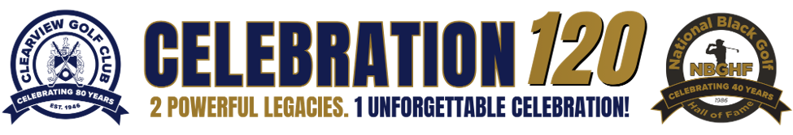

The biggest opening in years: LeBron James is bringing a PGA TOUR event to Akron in July 2027, about 20 miles from Clearview, and a wave of Black athletes now love the game. This plan puts Clearview and the Hall in front of them, led by John and Renee, with no money asked.
LeBron James took up golf at 40 and has built around it fast. On August 25, 2026, the PGA TOUR and his foundation announced the first LeBron James Family Foundation Invitational, July 6 and 7, 2027, at Firestone Country Club in Akron. It is run with the PGA TOUR's Pathway to Progression program (the APGA and Black collegiate golfers), and those young professionals will mentor students from his I PROMISE school. Participants and details have not been announced, so the event is still being shaped.
The event comes first because it is institutional and open right now; the people follow, strongest fit first.
| # | Who | Why they fit | The invitation | Door |
|---|---|---|---|---|
| 1 | LeBron James Family Foundation Invitational | PGA TOUR event in Akron, July 6-7, 2027, built with the APGA pipeline | A Clearview day during Invitational week; recognition at Firestone; invite players to Atlanta | Tad Dickman, PGA TOUR Communications, to find the event lead |
| 2 | J.R. Smith | Walked on to NC A&T golf (2021-26); APGA amateur debut July 2026; wants to grow golf "from a grassroots side"; played in LeBron's first golf episode | A round with Renee, or bring a grassroots event to Clearview | APGA or the NC A&T golf program |
| 3 | Steph Curry | Scratch golfer; funds Howard golf; runs the UNDERRATED junior tour; 2024 Charlie Sifford Award; born in Akron | An UNDERRATED day at Clearview with Renee | UNDERRATED Golf |
| 4 | Larry Fitzgerald | Enshrined in Canton, Aug 8, 2026; first African American amateur to win the Pebble Beach Pro-Am | A round with Renee on his next Canton visit | His representative (to find) |
| 5 | Kevin Hart | "Kevin Hart Golfs" channel; planning a golf match with LeBron | A channel episode at Clearview with Renee | His golf channel team (to find) |
| 6 | Charles Barkley | $1M each to Morehouse and Clark Atlanta; played for HBCUs in The Match | Join the Atlanta induction, or send a video | Charles Barkley Foundation or an Atlanta HBCU |
| 7 | Samuel L. Jackson | Near-daily golfer; Morehouse graduate | Guest at the Atlanta induction | To find |
| 8 | Michael Jordan | Owns the Grove XXIII | Brand support, through Jordan Brand partners | Not directly |
Second wave: Tiger Woods (through TGR Foundation), Ken Griffey Jr. (raised in Cincinnati), Jerry Rice, Julius Erving. Held: Smokey Robinson, until a civil suit set for trial in October 2027 resolves.
Every letter comes from Renee Powell and John Simpson, makes one specific invitation, and asks only for a short call.
Drafts for the event and the first five people are ready for review: LeBron's Invitational, J.R. Smith, Steph Curry, Larry Fitzgerald, Kevin Hart and Charles Barkley. Each one is edited before it reaches John, and nothing goes out without John's and Renee's approval.
The event goes first because its plans are still open; each person follows only after the one before has been answered or given time.
If J.R. Smith responds, he is the most natural person to bring Clearview's story to LeBron personally.
Nothing is sent until these are settled.